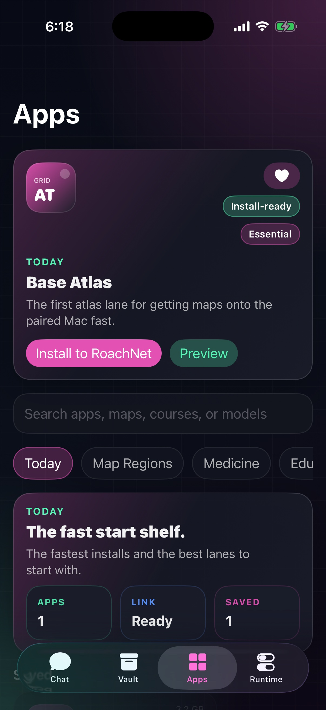
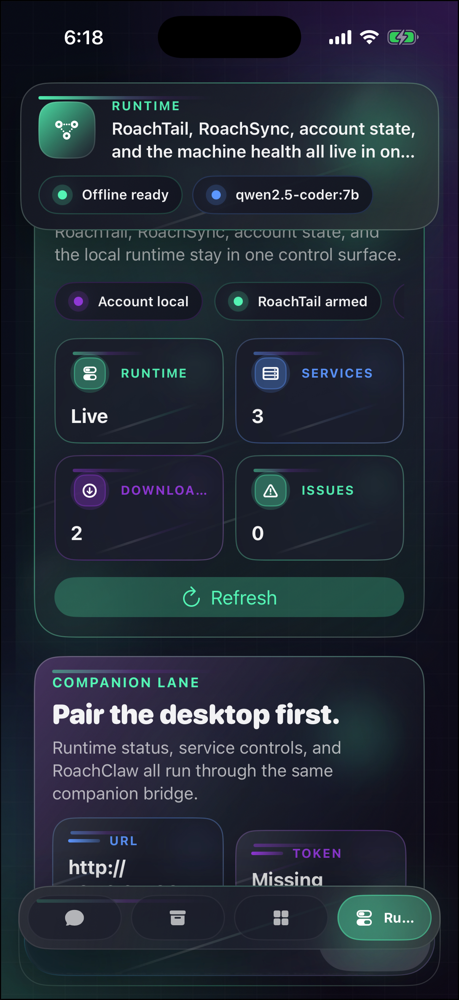
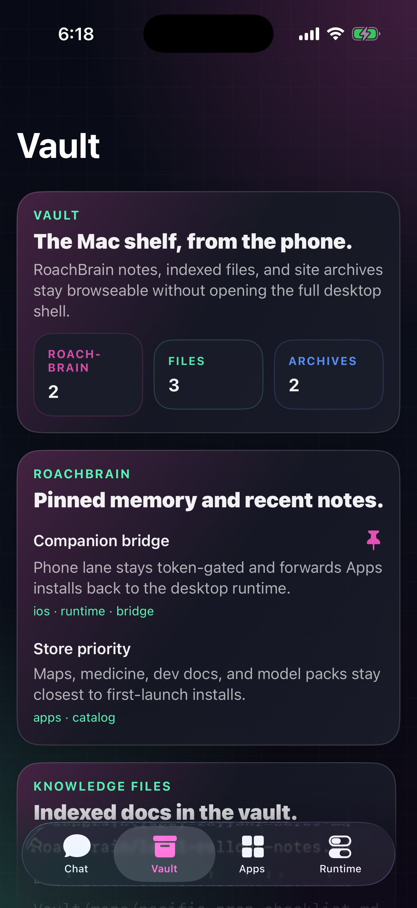

v0.1.2
Chat
Keep the thread going.
Use your paired machine when it is there. Fall back cleanly when it is not.
RoachNet iOS
Chat first. Vault, installs, and runtime checks stay one tap away from the same contained stack you already run on the desktop.
Unsigned IPA for SideStore. Pair it when you can. Keep moving when you cannot.
Screens
One shell for chat, vault, installs, and runtime checks. No tiny-dashboard nonsense.
Use your paired machine when it is there. Fall back cleanly when it is not.

v0.1.2Browse packs, save picks, and hand them to the Mac when the bridge comes back.

v0.1.2What is live, what is downloading, and what needs attention. No laptop flip-open required.

v0.1.2Indexed files and archive summaries on your phone, still readable when the bridge drops.
What’s in 0.1.2
The companion opens quicker, pairs faster, and leaves you in fewer dead ends.
Install
Add the source or use the IPA. Same app, cleaner path.
Add the RoachNet source in SideStore, or download the IPA and share it to SideStore to install.
Open this page on your iPhone or iPad, or AirDrop the IPA first.
Pairing
The desktop still owns the models, vault, installs, and secure network host. The phone stays quick and useful instead of pretending to be the desktop.
https://roachnet.roachtail or scan the QR from the desktop shell.